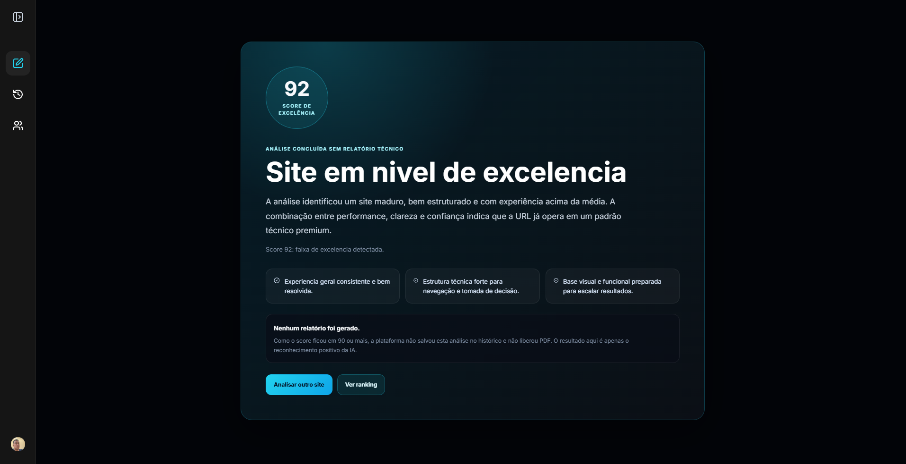

Do diagnóstico de conversão ao site pronto para vender.
A S.S.W Intelligence mostra onde visitantes perdem confiança, clareza ou vontade de avançar. A Silva Serviços Web transforma esses dados em sites, landing pages e sistemas mais persuasivos.


Descubra por que seu site não converte como deveria.
A S.S.W Intelligence analisa clareza, confiança, performance e comportamento de personas reais para revelar onde você perde oportunidades — e mostra o caminho para transformar visitas em clientes.
Testando um site local? Veja o nosso Tutorial Ngrok para gerar uma URL pública.
Escolha a persona
Use uma persona salva para orientar a análise desta URL.
Gestão de Perfis
Crie perfis de clientes para simular como pessoas diferentes avaliam seu site.
Cadastrar Novo Perfil
Separe por vírgulas. Até 7 descrições, com 20 caracteres cada.
Liberar auditoria
Use esta área quando um site bloquear a captura automática. Cadastre o domínio, copie a instrução gerada e envie para quem cuida do Cloudflare, firewall ou plugin de segurança.
Fluxo simples
A S.S.W sempre tenta auditar normalmente primeiro. Se o site bloquear, você só precisa liberar a S.S.W Intelligence como ferramenta confiável e testar novamente.
Não precisa mexer em DNS, meta tag ou arquivo. O sistema gera um código privado e uma mensagem pronta para enviar ao técnico.
O que será liberado
A auditoria será identificada por um User-Agent oficial e por um header privado único. O técnico só precisa permitir esses dois sinais juntos.
Histórico de análises
Revise auditorias concluídas, compare a evolução entre formatos e retome rapidamente os principais achados de cada diagnóstico.